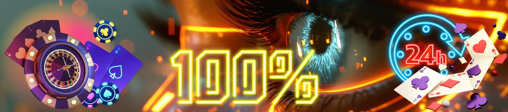

Perché scegliere OnlySpins Casino in Italia
Nel panorama italiano del gioco online, OnlySpins Casino si sta rapidamente affermando come un'opzione fresca e focalizzata per i giocatori dello Stivale. La domanda che molti si pongono è: "Vale la pena provare OnlySpins?" Un'analisi approfondita dell'esperienza su only spins casino rivela una piattaforma moderna, dalle performance solide e con un'attenzione genuina al valore per il giocatore. Operando con licenza internazionale e protocolli di sicurezza avanzati, OnlySpins si presenta come una scelta convincente per gli utenti italiani. Che tu acceda da Milano, Roma, Napoli o Palermo, onlyspins casino offre un'esperienza localizzata: un processo di accesso a onlyspin semplice e veloce, supporto per depositi e prelievi in Euro (€) tramite metodi come CartaSi, PostePay e Skrill, e un sistema premiante che valorizza il tuo tempo di gioco. La sua ascesa nel mercato italiano non è casuale; è il risultato di un approccio diretto e orientato al giocatore, che risuona con chi cerca essenzialità e qualità.
Registrati e Richiedi il Bonus| Categoria | Dettagli |
|---|---|
| 🎯 Licenza | Licenza Internazionale di Gioco (Curacao eGaming) |
| 📅 Fondato | 2022 |
| 💻 Piattaforma | Sito Web + Versione Mobile Ottimizzata |
| 🎰 Giochi Casino | 1000+ Giochi |
| ⚡ Slot | 750+ Titoli |
| 🎲 Live Casino | 40+ Tavoli Live |
| 💳 Metodi di Pagamento (IT) | CartaSi, PostePay, Visa, Mastercard, Skrill, Neteller, Bonifico Bancario |
| 🔒 Sicurezza | Crittografia SSL 256-bit, RNG Certificato |
| 🤑 Bonus di Benvenuto | 100% fino a 500 € |
| 📱 Mobile | Browser Mobile Ottimizzato (Responsive) |
| 💰 Valuta | Euro (€) |
| 🕒 Tempi di Prelievo | 0-24 ore (e-wallet), 1-3 giorni lavorativi (carta/banca) |
| 🌍 Lingue | Italiano, Inglese |
| 📞 Supporto | Chat Live 24/7, Email, Telefono (IT) |
OnlySpins – Panoramica del casino online
Cos’è onlyspins e come funziona
OnlySpins è un casino online relativamente nuovo ma che ha saputo ritagliarsi uno spazio definito puntando su chiarezza, selezione curata e un'esperienza utente fluida. A differenza di piattaforme sovraccariche, only spins casino si distingue per un'interfaccia pulita e un flusso di gioco lineare. Il suo funzionamento è semplice: registrazione rapida, deposito immediato con metodi italiani, accesso a una libreria di giochi di qualità e prelievo senza intoppi. La filosofia è "less is more", offrendo sostanza senza distrazioni superflue, il che lo rende particolarmente attraente per il giocatore italiano che cerca un'esperienza diretta e affidabile.
Prime impressioni per i nuovi utenti
Per un nuovo giocatore in Italia, l'approccio a onlyspins casino è immediatamente positivo. Il sito carica velocemente, i colori sono piacevoli e non aggressivi, e le call-to-action (come "Registrati" e "Accedi") sono ben evidenti. La localizzazione in italiano è completa, incluse le condizioni dei bonus e il supporto. La prima impressione è quella di una piattaforma seria, moderna e facile da esplorare, un fattore cruciale per trattenere l'utenza nel competitivo mercato italiano del gambling online. L'attenzione al dettaglio per il pubblico italiano si nota in:
- Valuta e Pagamenti Locali: Utilizzo esclusivo dell'Euro (€) e integrazione di metodi di pagamento italiani di fiducia come CartaSi e PostePay.
- Selezione di Giochi: Una raccolta che include titoli di slot e live game molto popolari in Italia.
- Supporto Clienti: Assistenza in italiano, con operatori che comprendono le esigenze e le normative locali.
- Promozioni Mirate: Bonus e tornei spesso concepiti tenendo conto dei fusi orari e delle abitudini di gioco italiane.
- Conformità Normativa: Opera nel pieno rispetto delle leggi internazionali sul gioco a distanza, garantendo un ambiente sicuro per i residenti in Italia.
“Mi sono registrato su OnlySpins l'anno scorso e da allora è il mio casino di riferimento. L'accesso a onlyspin è istantaneo, i giochi sono fluidi e quando ho vinto, il prelievo è arrivato in 12 ore. Da giocatore italiano, avere tutto in euro e poter usare PostePay è un vantaggio enorme.” – Luca, giocatore di Bologna.
Sicurezza e correttezza sono alla base dell'esperienza OnlySpins. La piattaforma utilizza la crittografia SSL di livello bancario per proteggere tutte le transazioni. I suoi giochi sono alimentati da un Random Number Generator (RNG) certificato da organismi indipendenti, garantendo risultati completamente casuali e imparziali. Per il giocatore italiano in cerca di un casino online trasparente e divertente, questo impegno rende onlyspins casino una scelta da tenere in seria considerazione.
Esperienza utente su only spins casino
Navigazione semplice e struttura chiara
Uno dei punti di forza di only spins casino è la sua usabilità. La navigazione è progettata per essere intuitiva: il menù principale offre accesso immediato alle sezioni "Slot", "Live Casino", "Giochi da Tavolo" e "Promozioni". La barra di ricerca permette di trovare rapidamente un gioco specifico. L'assenza di elementi superflui o pubblicità invasive contribuisce a un'esperienza di gioco pulita e concentrata, molto apprezzata dagli utenti italiani che non amanno le interfacce caotiche.
- Tutte le categorie di gioco sono accessibili in due clic o meno dalla homepage.
- Il saldo e i pulsanti per depositare e prelevare sono sempre visibili in alto.
- Le informazioni sui bonus attivi e i punti fedeltà sono facilmente consultabili nell'area personale.
- Le impostazioni di gioco responsabile (limiti di deposito, timeout) sono facili da trovare e configurare.
Accesso rapido ai contenuti principali
OnlySpins casino ottimizza il percorso del giocatore verso i contenuti più ricercati. Gli slot nuovi e popolari sono in evidenza, i tornei in corso hanno una sezione dedicata e i giochi con jackpot sono raggruppati per visibilità. Questo approccio diretto riduce il tempo di "ricerca" e massimizza il tempo di "gioco", un aspetto fondamentale per l'utente moderno, specialmente in Italia dove la connettività mobile è sempre più utilizzata per il gaming.
Affidabilità e trasparenza di onlyspins casino
Perché onlyspins è considerato affidabile
La reputazione di onlyspins casino cresce grazie a pilastri fondamentali: licenza riconosciuta, partnership con fornitori di software di prim'ordine (NetEnt, Pragmatic Play, Evolution Gaming) e politiche chiare. A differenza di alcuni operatori "ombrello", only spins casino mantiene un controllo diretto sulla piattaforma, assicurando coerenza e qualità del servizio. Le recensioni degli utenti, specialmente in forum italiani, sottolineano positivamente la puntualità dei pagamenti e la trasparenza dei termini delle promozioni.
Protezione dei giocatori e correttezza
Oltre alla sicurezza tecnica, OnlySpins dimostra impegno nella protezione del giocatore. Offre strumenti avanzati per il gioco responsabile:
- Possibilità di impostare limiti di deposito giornalieri, settimanali o mensili.
- Opzione di auto-esclusione temporanea o permanente con pochi clic.
- Reality check che notifica il tempo di gioco trascorso.
- Link diretti a organizzazioni di supporto al gioco d'azzardo problematico in Italia.
Questa attenzione, unita alla certificazione dei giochi, posiziona onlyspins casino come un operatore coscienzioso e affidabile nel panorama del gioco online italiano.
only spin e only spins – cosa aspettarsi dalla piattaforma
Differenze percepite dagli utenti
I termini "only spin" e "only spins" sono spesso usati informalmente dalla community per riferirsi alla piattaforma. Nella sostanza, non indicano differenze nel prodotto. "Only spin" potrebbe essere usato in contesti più colloquiali ("Vado a fare un only spin"), mentre "only spins" è più vicino al nome brand e alla sua offerta principale (una forte focalizzazione sulle slot). Tuttavia, l'esperienza su only spins casino è univoca e coerente, indipendentemente dalla variante lessicale utilizzata. La piattaforma offre molto di più delle sole slot, ma il nome riflette un'origine e una specializzazione che i giocatori italiani riconoscono e apprezzano.
Coerenza dell’esperienza di gioco
Che tu acceda come utente "only spin" o "only spins", troverai la stessa qualità: performance stabili, grafica curata, un'ampia selezione di titoli e un supporto reattivo. Questa coerenza è un segno di maturità della piattaforma ed è fondamentale per costruire fiducia a lungo termine con i giocatori in Italia. Non ci sono versioni "diverse" del sito; l'offerta è standardizzata e di alta qualità per tutti gli utenti registrati.
Giochi disponibili su only spins casino
Varietà di contenuti senza confusione
La libreria di onlyspins casino, pur non essendo la più vasta in assoluto, è estremamente curata e di qualità. Con oltre 1000 titoli, offre una selezione che soddisfa la maggior parte dei giocatori senza sopraffarli con scelte infinite. I giochi sono forniti da sviluppatori leader del settore, garantendo grafica eccellente, gameplay fluido e meccaniche bilanciate.
- Slot Video: Il cuore pulsante, con centinaia di titoli che spaziano dai classici fruttati alle video slot più innovative con bonus multipli. Titoli imperdibili includono Gates of Olympus, Book of Dead, Starburst e Big Bass Bonanza.
- Giochi da Tavolo: Tutti i classici sono presenti in diverse varianti: Blackjack (Europeo, Americano), Roulette (Europea, Francese, Americana), Baccarat e Poker Casino (Caribbean Stud).
- Live Casino: Una sezione in crescita con oltre 40 tavoli live. Esperienza autentica con croupier reali per Live Blackjack, Live Roulette, Live Baccarat e game show come Monopoly Live e Dream Catcher.
- Jackpot Progressivi: Una selezione mirata di slot collegate a jackpot network che possono raggiungere cifre milionarie in Euro (€).
- Altri Giochi: Una piccola sezione dedicata a videopoker, scratch card e giochi virtuali.
Giochi adatti a diversi stili di gioco
La piattaforma only spins casino è perfetta per:
- L'Appassionato di Slot: Troverà una selezione aggiornata e di tendenza, con ottime percentuali di RTP.
- Il Giocatore Strategico: Apprezzerà le numerose varianti di blackjack e roulette con regole favorevoli.
- Chi Cerca il Realismo: La sezione Live Casino offre un'esperienza sociale e immersiva paragonabile a un casino fisico.
- Il Giocatore Cauto: La possibilità di giocare con puntate basse (anche pochi centesimi) su molti titoli lo rende accessibile.
"Il bello di OnlySpins è che trovi i giochi che contano, senza dover scorrere pagine infinite di titoli sconosciuti. La qualità è costante, sia che giochi da PC a Torino che da telefono in spiaggia in Sicilia." – Giulia, giocatrice di Verona.
L'integrazione di fornitori premium assicura una qualità uniforme e un'esperienza di gioco soddisfacente per gli utenti in tutta Italia.
Registrazione e accesso a onlyspin
Creare un account su onlyspins
La registrazione su only spins casino è un processo veloce e lineare, progettato per non far desistere i nuovi utenti.
- Clicca sul pulsante verde "Registrati" in alto a destra.
- Compila il breve modulo con dati di base: email, password scelta, nome, cognome, data di nascita, indirizzo in Italia.
- Accetta i Termini e Condizioni e l'Informativa sulla Privacy.
- Conferma la registrazione tramite il link inviato via email (verifica antispam).
- Effettua il primo deposito per attivare il conto e sbloccare il bonus di benvenuto.
L'intero processo richiede meno di tre minuti e il conto è immediatamente utilizzabile dopo il primo deposito.
Gestione dell’accesso e dell’area personale
Una volta registrato, l'accesso a onlyspin è semplicissimo. Cliccando "Accedi" e inserendo le credenziali, sarai trasferito alla tua lobby personale. L'area personale ("My Account") è ben organizzata:
- Profilo: Aggiorna i dati personali e le preferenze di comunicazione.
- Cashier (Cassa): Gestisci tutti i depositi e prelievi. I metodi disponibili per l'Italia sono chiaramente elencati.
- Cronologia Transazioni: Visualizza lo storico completo di depositi, scommesse e prelievi.
- Bonus Attivi: Monitora lo stato e i requisiti di puntata (wagering) dei bonus attivati.
- Impostazioni Sicurezza: Qui puoi attivare l'autenticazione a due fattori (2FA) per proteggere ulteriormente l'accesso al tuo account onlyspin.
Utilizzare onlyspins casino su mobile
Esperienza mobile ottimizzata
OnlySpins casino non ha un'app nativa dedicata, ma compensa ampiamente con un sito web mobile estremamente ben realizzato e responsive. Accedendo da smartphone o tablet, il sito si adatta automaticamente allo schermo, offrendo un'esperienza di gioco pienamente funzionale.
- Compatibilità Totale: Funziona perfettamente su browser come Chrome, Safari e Firefox su dispositivi iOS e Android.
- Libreria Completa: La stragrande maggioranza dei 1000+ giochi è disponibile e ottimizzata per il touch screen.
- Funzionalità Piena: Puoi registrarti, depositare, giocare, prelevare, contattare il supporto e gestire il tuo account direttamente dal browser mobile.
- Performance Veloci: I giochi si caricano rapidamente anche su connessioni 4G/5G, essenziale per giocare in mobilità in Italia.
Giocare senza app dedicata
La scelta di non sviluppare un'app dedicata ha i suoi vantaggi per only spins casino e per i giocatori italiani:
- Nessun Aggiornamento: Non devi scaricare aggiornamenti; avrai sempre la versione più recente del sito.
- Risparmio di Spazio: Non occupa memoria sul tuo dispositivo.
- Accesso Immediato: Basta salvarlo tra i preferiti del browser per un accesso con un tap, quasi come un'app.
- Compatibilità Universale: Funziona su qualsiasi dispositivo con un browser moderno, senza restrizioni da store.
Per il giocatore italiano che gioca spesso fuori casa, l'esperienza mobile ottimizzata di onlyspins casino è più che sufficiente per garantire sessioni di gioco piacevoli e senza compromessi.
A chi è consigliato only spins casino
Tipologie di giocatori ideali
OnlySpins casino è la scelta ideale per specifici profili di giocatori italiani:
- Il Giocatore Moderno e Pragmatico: Chi cerca un'esperienza online senza fronzoli, con un'interfaccia chiara e funzionalità essenziali ma ben eseguite.
- L'Appassionato di Slot di Qualità: Chi preferisce una selezione curata delle slot più giocate e di tendenza, piuttosto che una quantità sterminata di titoli sconosciuti.
- Chi Valuta la Sicurezza e la Trasparenza: Giocatori attenti alla licenza, alla protezione dei dati e alla chiarezza dei termini di gioco.
- Il Mobile Gamer: Chi gioca principalmente da smartphone o tablet e apprezza un sito responsive ben fatto.
- Il Principiante Italiano: Nuovi giocatori che desiderano un ambiente intuitivo, localizzato e senza complessità inutili per approcciare il mondo del gaming online in Italia.
Quando onlyspins è la scelta giusta
Dovresti seriamente considerare onlyspins casino se:
- Cerchi un casino online con un'interfaccia moderna, veloce e facile da usare.
- Apprezzi una selezione di giochi di alta qualità, anche se non la più vasta in assoluto.
- Desideri giocare in Euro (€) e utilizzare metodi di pagamento italiani comuni.
- Vuoi un operatore con un buon supporto clienti in lingua italiana.
- Preferisci la comodità del gioco via browser mobile senza dover scaricare app.
Potresti invece guardare altrove se la tua priorità assoluta è avere a disposizione decine di migliaia di giochi da centinaia di provider, o se sei un giocatore d'alto rotolo che cerca programmi VIP esclusivi e iper-personalizzati. Per la maggior parte dei giocatori italiani che cercano un'esperienza equilibrata, affidabile e piacevole, only spins casino è un'ottima opzione.
Vantaggi e aspetti da considerare di onlyspins
Per una scelta informata, ecco una panoramica equilibrata dei principali pro e contro di OnlySpins Casino per il mercato italiano.
| ✅ Vantaggi | ❌ Aspetti da Considerare |
|---|---|
| ✅ Interfaccia moderna, intuitiva e ottimizzata per il mobile. | ❌ Non esiste un'app nativa dedicata per iOS/Android (solo sito responsive). |
| ✅ Selezione di giochi di alta qualità da fornitori top, senza eccessivo rumore. | ❌ La libreria (1000+ giochi) è più piccola rispetto a colossi del settore. |
| ✅ Perfetta localizzazione per l'Italia: supporto IT, valuta €, pagamenti locali. | ❌ Il programma fedeltà/vip è meno strutturato rispetto a operatori storici. |
| ✅ Processo di registrazione e accesso a onlyspin rapidissimo e semplice. | ❌ Bonus di benvenudo solido ma non tra i più alti in assoluto sul mercato. |
| ✅ Ottima reputazione per pagamenti puntuali e trasparenza dei termini. | ❌ Essendo un operatore più recente, non ha la storia ventennale di alcuni rivali. |
| ✅ Strumenti di gioco responsabile facili da trovare e configurare. | |
| ✅ Supporto clienti 24/7 disponibile in italiano via chat live e email. |
Conclusione – La nostra opinione su OnlySpins Casino
Dopo una valutazione completa, OnlySpins Casino emerge come una scelta fresca, credibile e ben eseguita per i giocatori online in Italia. Riesce a coniugare una libreria di giohi di alta qualità – selezionata tra i migliori provider – con un'esperienza utente moderna e fluida, il tutto erogato su una piattaforma sicura e trasparente.
I suoi punti di forza sono attuali: un'interfaccia pulita che funziona splendidamente su mobile, una selezione di giohi che privilegia la qualità alla quantità, una localizzazione italiana impeccabile e una solida reputazione per l'affidabilità nei pagamenti. Sebbene sia un operatore più recente, questo non deve essere visto come un limite, ma come un vantaggio che gli permette di essere agile e focalizzato sulle esigenze del giocatore moderno, specialmente in un mercato dinamico come quello italiano.
Per i giocatori italiani, da nord a sud, che cercano un'esperienza online senza complicazioni, dove l'accesso a onlyspin è immediato, i giochi sono divertenti e i prelievi sono gestiti con professionalità, OnlySpins Casino rappresenta un'opzione molto valida. Se apprezzate l'essenzialità ben fatta, la trasparenza e un servizio localizzato di qualità, only spins casino non è solo un tentativo da fare, ma una piattaforma che merita di diventare la vostra destinazione di gioco principale in Italia.
FAQ – OnlySpins Casino
onlyspins è adatto ai giocatori italiani?
only spins casino è facile da usare?
Come funziona l'accesso a onlyspin?
Che tipo di giochi offre onlyspins casino?
OnlySpins è indicato per principianti?
Altre Domande su OnlySpins
Ci sono tornei regolari su OnlySpins Casino?
OnlySpins offre un bonus senza deposito per i nuovi giocatori italiani?
È possibile impostare limiti di gioco su OnlySpins?
Scopri OnlySpins Casino Italia Oggi!
OnlySpins Casino Italia offre un'esperienza di gioco online moderna, affidabile e pensata per il giocatore italiano. Che tu sia attratto dalle emozionanti slot video, dalla strategia dei giochi da tavolo classici o dall'atmosfera autentica del live casino, OnlySpins porta tutto questo su una piattaforma semplice e sicura. Goditi la comodità di giocare in Euro (€) con i metodi di pagamento che preferisci, l'assistenza in italiano sempre disponibile e la tranquillità di un operatore trasparente. Con un accesso a onlyspin velocissimo e un'esperienza mobile ottimizzata, puoi giocare dove e quando vuoi, in tutta Italia. Registrati ora, richiedi il tuo bonus di benvenuto e scopri perché sempre più giocatori nella nostra penisola scelgono only spins casino per il loro intrattenimento online.
Gioca Ora su OnlySpins Casino